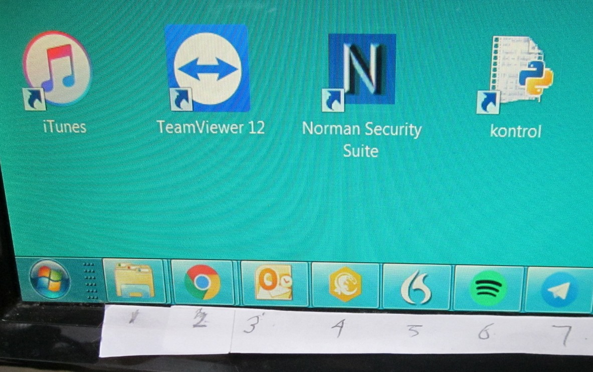
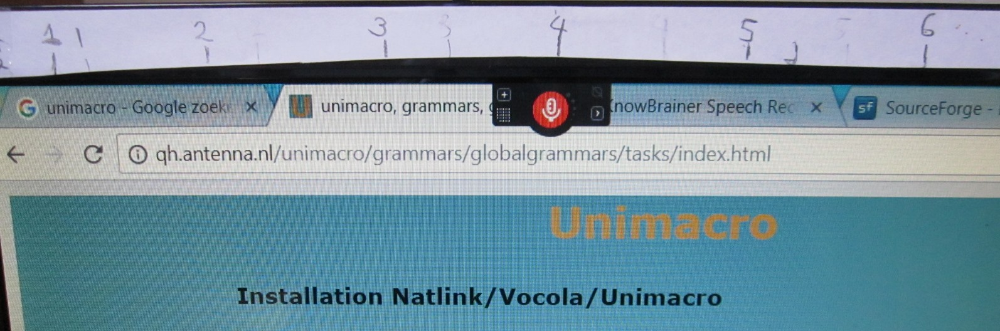
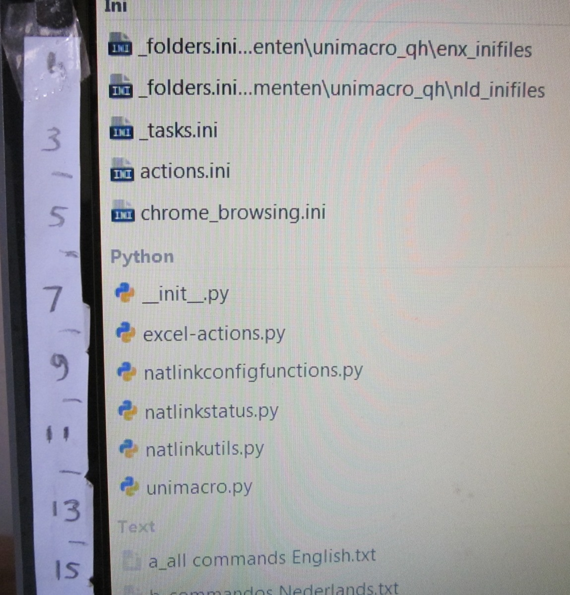

Getting the taskbar and document positions- The taskbar positions are global,
- The document positions are application specific.
Get Taskbar positions
Before you can use the commands below, the correct mouse positions must be collected, once.
I now prefer the taskbar at the bottom, with tasks stacked, like:

But other positioning works too. |
Getting the proper mouse positions- Position the mouse on the first task, and say the command get task position one.
- Position the mouse on one of the other tasks (eg 5) and say get task position n (in this case five). The difference between the mouse positions of each task is now calculated.
|
Get Document positions
For applications that you want to use, eg Chrome or an IDE (in this example Komodo), youshould now get the correct mouse positions. This needs to be done once, as long as the task remains in the same place.
I have the chrome documents at the top, of course, and the Komodo documents on the left. On paper strips I have marked the numbers for the different documents. For Chrome the tabs shrink when there are more tabs on, so you have to smuggle a bit. |

Example document numbers chrome (above) and Komodo (right) |  |
- Be sure the application is in focus!
- Position the mouse on the tab of the first document, and say the command get document position one.
- Position the mouse on the tab of one of the other documents (eg 5) and say get document position n (in this case five).
|
Get the icon position
Note: I hardly ever use this command any more. If there are users that have profit of this option, please let me know!
- For the icon commands and for getting the taskbar menu you need the position of the computer clock in the system tray: position the mouse there and say task position clock
How is it stored?
These data are stored in the configuration file actions.ini. Say edit actions to inspect. This means that speech profiles of different languages can use the same settings.
Moreover, other grammars and even Vocola commands can use these positions via the
unimacro shorthand commands *TASK n and DOCUMENT n.
But note currently these two commands are not in the compatibility file Unimacro.vch.
[positions]
clockx = -40
clocky = 998
mousex1 = 122
mousexdiff = 69
mousey1 = 1030
mouseydiff = 0
[positions chrome]
mousex1 = 75
mousexdiff = 146
mousey1 = 47
mouseydiff = 0
[positions komodo]
mousex1 = 97
mousexdiff = -1
mousey1 = 168
mouseydiff = 27 |